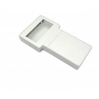

Project template containing the recommended board layout for Hammond Manufacturing 1591ETSD:
Gray: 1592ETSDGY - HM4003-ND
Black: 1592ETSDBK - HM4002-ND
|  |
The "Dwgs.User" layer contains all critical dimmensions in milimeters[inches].
The "Edge.Cuts" layer contains the maximum board outline and holes to align with board standoffs.
PCB Preview: